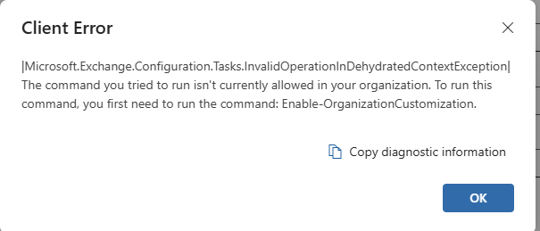

Guide: Enabling Microsoft Purview Audit (Standard) in a Tenant
This one-time setup enables audit collection and validates that search is functioning correctly.
1) Enable Audit Logging in Purview
- Go to Microsoft Purview -> Audit.
- If prompted with Start recording user and admin activity, select it.
- If asked to Complete organizational setup, choose Yes.
Expected behavior: The setup banner disappears and the audit interface becomes available.
2) Allow Time for Ingestion to Initialize
Initial event ingestion typically starts in 5 to 30 minutes.
- Failed to load data
- Empty search results
- No saved searches
These are expected during first-time initialization.
3) If Needed: Enable Exchange Organization Customization
If audit search errors reference InvalidOperationInDehydratedContextException or mention Enable-OrganizationCustomization, complete these steps.

3.1 Install Exchange Online PowerShell Module
Install-Module ExchangeOnlineManagement3.2 Allow Signed Scripts (if required)
Set-ExecutionPolicy RemoteSigned -Scope CurrentUser3.3 Connect to Exchange Online
Connect-ExchangeOnline3.4 Enable Organization Customization
Enable-OrganizationCustomizationIf already hydrated, Exchange responds that customization is already enabled.
4) Validate Audit Search Functionality
- Date range: Last 24 hours
- Activity: List item updated (or another common event)
- Users: leave blank
Success: Search runs without backend errors; results may be empty if no recent activity exists.
5) Post-Activation Behavior
- Audit events begin appearing automatically
- Saved searches load normally
- No setup banners or Exchange hydration errors remain